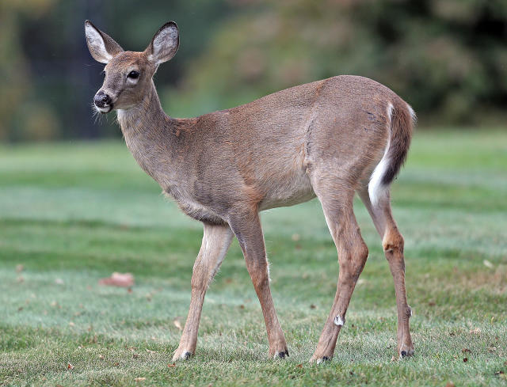
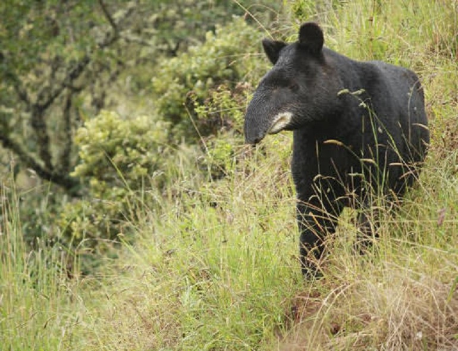
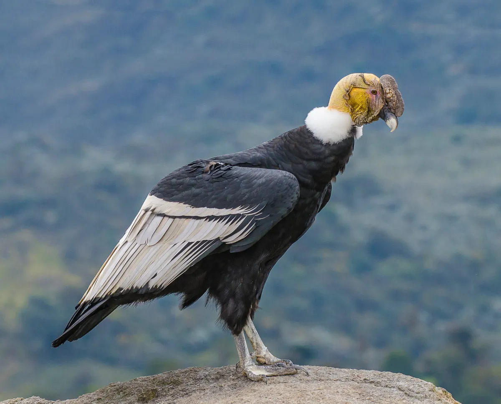
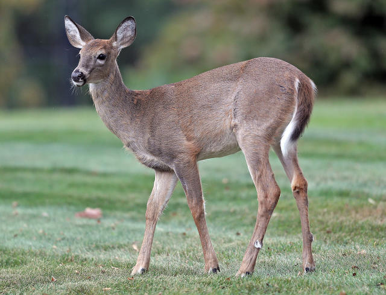
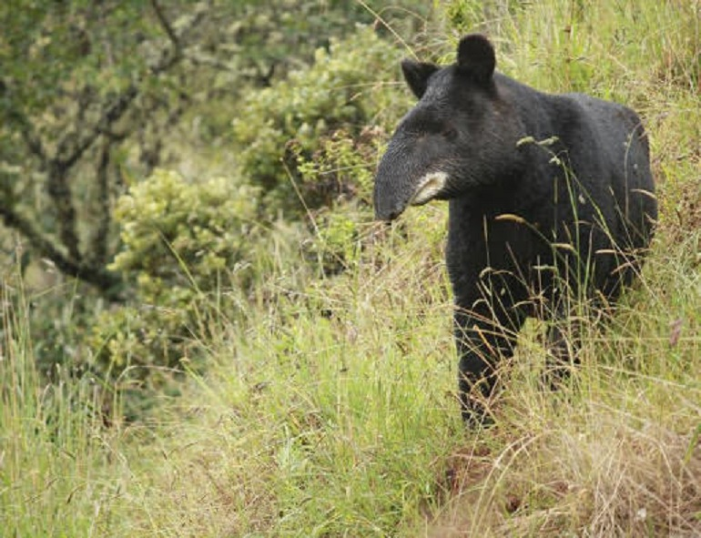
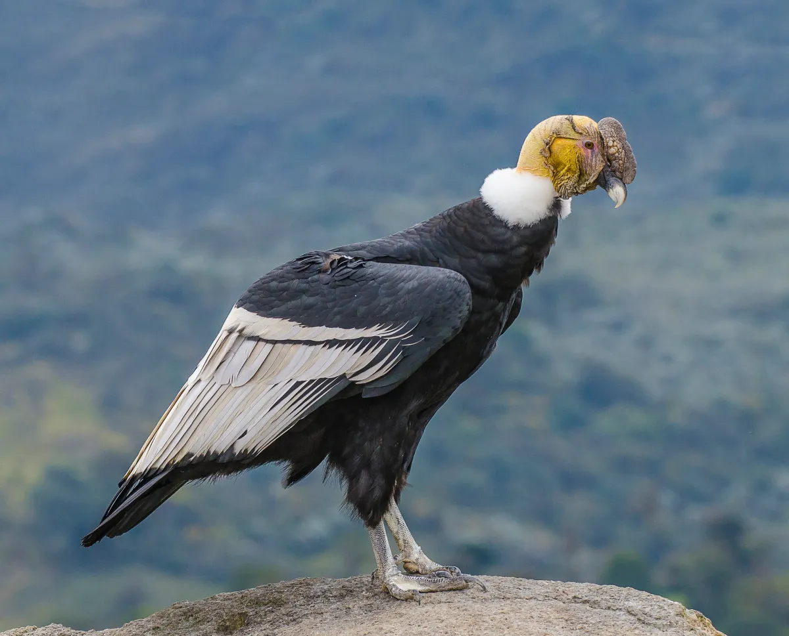

Cajicá es un municipio colombiano del departamento de
Cundinamarca ubicado en la Provincia de Sabana Centro, a 17 km
al norte de Bogotá. Hace parte del Área Metropolitana de Bogotá.
Es el tercer municipio más poblado de la provincia después de
Zipaquirá y Chía. Se encuentra a una altitud de 2.558 m s. n. m.
y tiene una temperatura promedio de 14 °C. Cajicá es conocida
por sus tejidos de lana virgen de oveja, que los artesanos
presentan a la venta en forma de tapices y tapetes hechos en
telares y anudados a mano. Su cultura se puede presenciar en su
Centro Cultural.
El topónimo «Cajicá», en muysc cubun (idioma muisca) significa
«Cercado de Piedra», «Vallado de Piedra» o «Fortaleza de
Piedra», de los vocablos muiscas ca (cercado, o vallado) y hyca
(piedra, o roca). Debido a que en el idioma muisca la letra "h"
se lee como una "j" suave, la ortografía de acuerdo con el muysc
cubun es Cahyca, pero la pronunciación es "Cajicá".
Escudo
El escudo de Cajicá se compone de tres campos que representan la tradición religiosa, sus orígenes indígenas y su industria. Destaca una cruz blanca, un venado y piñones engranados. Se adorna con una bordura de oro y un águila con alas abiertas, simbolizando actividad y riqueza agrícola, sosteniendo cañas de maíz y mazorcas que representan las veredas del municipio. Una cinta con la inscripción “Fortaleza de Piedra” refleja el nombre muisca original del lugar, Cahyca.
 




